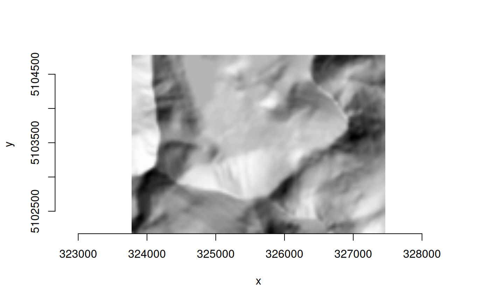

GDALAlg provides bindings to GDALAlgorithm and related classes
that implement the gdal command line interface (CLI) in the GDAL
API. An object of class GDALAlg represents an instance of a CLI algorithm
with methods to obtain algorithm information and argument information, run
the algorithm, and access its output.
Requires GDAL >= 3.11.3.
Experimental (see the section Development Status below)
GDALAlg is a C++ class exposed directly to R (via RCPP_EXPOSED_CLASS).
Fields and methods of the class are accessed using the $ operator.
Arguments to class constructors and class methods must be given in the order
documented (naming optional).
An object of class GDALAlg contains a pointer to the algorithm instance.
Class methods are described in Details, along with a set of writable fields
for per-object settings.
Usage (see Details)
## Constructors
alg <- new(GDALAlg, cmd)
# or, with arguments
alg <- new(GDALAlg, cmd, args)
## Read/write fields (per-object settings)
alg$setVectorArgsFromObject
alg$outputLayerNameForOpen
alg$quiet
## Methods
alg$info()
alg$argInfo(arg_name)
alg$usage()
alg$usageAsJSON()
alg$setArg(arg_name, arg_value)
alg$parseCommandLineArgs()
alg$getExplicitlySetArgs()
alg$run()
alg$output()
alg$outputs()
alg$close()
alg$release()Details
Constructors
new(GDALAlg, cmd)
Instantiate an algorithm without specifying input arguments. cmd is a
character string or character vector containing the path to the algorithm,
e.g., "raster reproject" or c("raster", "reproject").
new(GDALAlg, cmd, args)
Instantiate an algorithm giving input arguments as a character vector or
named list in args. See the section Algorithm Argument Syntax for
details.
Read/write fields (per-object settings)
$setVectorArgsFromObject
A logical value, TRUE (the default) to set algorithm arguments
automatically when the "input" argument or the "like" argument is an
object of class GDALVector. Argument values specified explicitly will
override the automatic setting (as long as they result in a parsable set of
arguments). Automatically setting arguments from GDALVector input can
be disabled by setting this field to FALSE. In that case, only the vector
dataset would be passed to the algorithm, i.e., without automatically
passing any layer specifications.
When enabled and the "input" or "like" argument for an algorithm is
given as a GDALVector object, corresponding arguments will be set
automatically based on properties of the object (when the argument is
available to the algorithm):
"input-format": set to theGDALVectorobject's driver short name"input-layer": set to theGDALVectorlayer name if it is not a SQL layer"sql": set to the SQL statement if theGDALVectorlayer is defined by one"dialect": set to the SQL dialect if one is specified for a SQL layer"like-layer": set to theGDALVectorlayer name if it is not a SQL layer"like-sql": set to the SQL statement if theGDALVectorlayer is defined by one
$outputLayerNameForOpen
A character string specifying a layer name to open when obtaining algorithm
output as an object of class GDALVector. See method $output() below.
The default value is empty string ("") in which case the first layer by
index is opened. Ignored if output is not a vector dataset.
$quiet
A logical value, FALSE by default. Set to TRUE to suppress progress
reporting along with various messages and warnings.
Methods
$info()
Returns a named list of algorithm properties with the following elements:
name: character string, the algorithm namefull_path: character string, the algorithm name as full pathdescription: character string, the algorithm (short) descriptionlong_description: character string, the algorithm longer descriptionURL: character string, the algorithm help URLhas_subalgorithms: logical,TRUEif the algorithm has sub-algorithmssubalgorithm_names: character vector of sub-algorithm names (may be empty)arg_names: character vector of available argument names
$argInfo(arg_name)
Returns a named list of properties for an algorithm argument given as a
character string, with the following elements:
name: character string, the name of the argumenttype: character string, the argument type as one of"BOOLEAN","STRING","INTEGER","REAL","DATASET","STRING_LIST","INTEGER_LIST","REAL_LIST","DATASET_LIST"description: character string, the argument descriptionshort_name: character string, the short name or empty string if there is nonealiases: character vector of aliases (empty if none)meta_var: character string, the "meta-var" hint (by default, the meta-var value is the long name of the argument in upper case)category: character string, the argument categoryis_positional: logical,TRUEif the argument is a positional oneis_required: logical,TRUEif the argument is requiredmin_count: integer, the minimum number of values for the argument (only applies to list type of arguments)max_count: integer, the maximum number of values for the argument (only applies to list type of arguments)packed_values_allowed: logical,TRUEif, for list type of arguments, several comma-separated values may be specified (i.e.,"--foo=bar,baz")repeated_arg_allowed: logical,TRUEif, for list type of arguments, the argument may be repeated (i.e.,c("--foo=bar", "--foo=baz"))choices: character vector of allowed values for the argument (may be empty and only applies for argument types"STRING"and"STRING_LIST")is_explicitly_set: logical,TRUEif the argument value has been explicitly sethas_default_value: logical,TRUEif the argument has a declared default valuedefault_value: character or integer or numeric, the default value if the argument has one, otherwiseNULLis_hidden_for_api: logical,TRUEif the argument is only for CLI usage (e.g., "–help") (GDAL >= 3.12 only, seeis_only_for_cli)is_hidden_for_cli: logical,TRUEif the argument must not be mentioned in CLI usage (e.g., "output-value" for "gdal raster info", which is only meant when the algorithm is used from a non-CLI context such as programmatically from R)is_only_for_cli: logical,TRUEif the argument is only for CLI usage (e.g., "–help") (deprecated at GDAL 3.12, seeis_hidden_for_api)is_input: logical,TRUEif the value of the argument is read-only during the execution of the algorithmis_output: logical,TRUEif (at least part of) the value of the argument is set during the execution of the algorithmdataset_type_flags: character vector containing strings"RASTER","VECTOR","MULTIDIM_RASTER", possibly with"UPDATE"(NULLif the argument is not a dataset type)dataset_input_flags: character vector indicating if a dataset argument supports specifying only the dataset name ("NAME"), only the dataset object ("OBJECT"), or both ("NAME", "OBJECT") when it is used as an input (NULLif the argument is not a dataset type)dataset_output_flags: character vector indicating if a dataset argument supports specifying only the dataset name ("NAME"), only the dataset object ("OBJECT"), or both ("NAME", "OBJECT") when it is used as an output (NULLif the argument is not a dataset type)mutual_exclusion_group: character string, the name of the mutual exclusion group to which this argument belongsmutual_dependency_group: character string, the name of the mutual dependency group to which this argument belongs (GDAL >= 3.13)depends_on: character vector of argument names that this argument depends on, including both regular dependencies and mutual dependencies (GDAL >= 3.13)available_in_pipeline_step: logical,TRUEif the argument is available in a pipeline step, orFALSEif it is only available in standalone mode (GDAL >= 3.13)
$usage()
Print a help message for the algorithm to the console. No return value.
$usageAsJSON()
Returns the usage of the algorithm as a JSON-serialized string.
$setArg(arg_name, arg_value)
Set the value of input algorithm argument arg_name, a character string
containing the argument's “long” name or an alias.
The type of the arg_value parameter must be compatible with the algorithm
argument type. Objects of class GDALRaster or GDALVector may be passed
for algorithm arguments that accept dataset object input. A list of
GDALRaster or GDALVector objects may be given for algorithm arguments of
type DATASET_LIST that accept object input. Generally, an input dataset can
also be specified by name as a character string (DSN), or character vector of
DSNs for a DATASET_LIST. Returns a logical value, TRUE indicating success
or FALSE if an error occurs.
$parseCommandLineArgs()
Sets the value of arguments previously specified in the class constructor,
and instantiates the actual algorithm that will be run (but without running
it). Returns a logical value, TRUE indicating success or FALSE if an
error occurs.
$getExplicitlySetArgs()
Returns a named list of arguments that have been set explicitly along with
their values. For arguments with dataset object values, the value of the list
element is a string of the form "<TYPE dataset object: DSN>" where TYPE
is one of "raster", "vector" or "multidim raster" and DSN is the
dataset name (filename, URL, etc.).
$run()
Executes the algorithm, first parsing arguments if
$parseCommandLineArgs() has not already been called explicitly.
Returns a logical value, TRUE indicating success or FALSE if an error
occurs.
$output()
Returns the single output value of the algorithm, after it has been run.
If there are multiple output values, this method will raise an error, and
the $outputs() (plural) method should be called instead. The type of
the return value corresponds to the type of the single output argument value
(see method $argInfo() above).
If the output argument has type "DATASET", an object of class GDALRaster
will be returned if the dataset is raster, or an object of class
GDALVector if the dataset is vector. In the latter case, by default the
GDALVector object will be opened on the first layer by index, but a
specific layer name may be specified by setting the value of the field
$outputLayerNameForOpen before calling the $output() method
(see above).
Note that currently, if the output dataset is multidimensional raster, only
the dataset name will be returned as a character string.
$outputs()
Returns the output value(s) of the algorithm as a named list, after it has
been run. Most algorithms only return a single output, in which case the
$output() method (singular) is preferable for easier use. The element
names in the returned list are the names of the arguments that have outputs
(with any dash characters replaced by underscore), and the values are the
argument values which may include GDALRaster or GDALVector objects.
$close()
Completes any pending actions, and returns the final status as a logical
value (TRUE if no errors occur during the underlying call to
GDALAlgorithmFinalize()). This is typically useful for algorithms that
generate an output dataset. It closes datasets and gets back potential error
status resulting from that, e.g., if an error occurs during flushing to disk
of the output dataset after successful $run() execution.
$release()
Release memory associated with the algorithm, potentially after attempting
to finalize. No return value, called for side-effects.
Algorithm Argument Syntax
Arguments are given in R as a character vector or named list, but
otherwise syntax basically matches the GDAL specification for arguments as
they are given on the command line. Those specifications are listed here
along with some amendments regarding the character vector and named list
formats. Programmatic usage also allows passing and receiving datasets as
objects (i.e., GDALRaster or GDALVector), in addition to dataset names
(e.g., filename, URL, database connection string).
Commands accept one or several positional arguments, typically for dataset names (or in R as
GDALRasterorGDALVectordatasets). The order is input(s) first, output last. Positional arguments can also be specified as named arguments, if preferred to avoid any ambiguity.Named arguments have:
at least one "long" name, preceded by two dash characters
optionally, auxiliary long names (i.e., aliases),
and optionally a one-letter short name, preceded by a single dash character, e.g.,
-f, --of, --format, --output-format <OUTPUT-FORMAT>
Boolean arguments are specified by just specifying the argument name in character vector format. In R
listformat, the named element must be assigned a value of logicalTRUE.Arguments that require a value are specified like:
-f VALUEfor one-letter short names--format VALUEor--format=VALUEfor long namesin a named list, this might look like:
args$format <- VALUE
Some arguments can be multi-valued. Some of them require all values to be packed together and separated with comma. This is, e.g., the case of:
--bbox <BBOX> Clipping bounding box as xmin,ymin,xmax,ymax
e.g.,--bbox=2.1,49.1,2.9,49.9Others accept each value to be preceded by a new mention of the argument name, e.g.,
c("--co", "COMPRESS=LZW", "--co", "TILED=YES"). For that one, if the value of the argument does not contain commas, the packed form is also accepted:--co COMPRESS=LZW,TILED=YES. Note that repeated mentions of an argument are possible in the character vector format for argument input, whereas arguments given in named list format must use argument long names as the list element names, and the packed format for the values (which can be a character vector or numeric vector of values).Named arguments can be placed before or after positional arguments.
Development Status
The GDAL Command Line Interface Modernization was first introduced in the GDAL 3.11.0 release (2025-05-09). The GDAL project provides warning that the new CLI "is provisionally provided as an alternative interface to GDAL and OGR command line utilities. The project reserves the right to modify, rename, reorganize, and change the behavior until it is officially frozen via PSC vote in a future major GDAL release. The utility needs time to mature, benefit from incremental feedback, and explore enhancements without carrying the burden of full backward compatibility. Your usage of it should have no expectation of compatibility until that time." (https://gdal.org/en/latest/programs/#gdal-application)
Initial bindings to enable programmatic use of the CLI algorithms from R were added in gdalraster 2.2.0, and will evolve over future releases. The bindings are considered experimental until the upstream API is declared stable. Breaking changes in minor version releases are possible until then. Please use with those cautions in mind. Bug reports may be filed at: https://github.com/firelab/gdalraster/issues.
See also
gdal_alg(), gdal_commands(), gdal_run(), gdal_usage()
Using gdal CLI algorithms from R
https://firelab.github.io/gdalraster/articles/use-gdal-cli-from-r.html
Examples
f <- system.file("extdata/storml_elev.tif", package="gdalraster")
## raster info
gdal_usage("raster info")
#>
#> Usage: raster info [OPTIONS] <INPUT>
#>
#> Return information on a raster dataset.
#>
#> Positional arguments:
#> -i, --dataset, --input <INPUT>
#> Input raster dataset
#> [required]
#>
#> Options:
#> -f, --of, --format, --output-format <OUTPUT-FORMAT>
#> Output format
#> [json|text]
#> --mm, --min-max
#> Compute minimum and maximum value
#> --stats
#> Retrieve or compute statistics, using all pixels
#> [mutually exclusive with --approx-stats]
#> --approx-stats
#> Retrieve or compute statistics, using a subset of pixels
#> [mutually exclusive with --stats]
#> --hist
#> Retrieve or compute histogram
#> --output-string <OUTPUT-STRING>
#> Output string, in which the result is placed
#>
#> Advanced options:
#> --if, --input-format <INPUT-FORMAT>
#> Input formats
#> [0 or more values]
#> [packed values allowed, repeated arg allowed]
#> --oo, --open-option <KEY>=<VALUE>
#> Open options
#> [0 or more values]
#> [packed values not allowed, repeated arg allowed]
#> --no-gcp
#> Suppress ground control points list printing
#> --no-md
#> Suppress metadata printing
#> --no-ct
#> Suppress color table printing
#> --no-fl
#> Suppress file list printing
#> --checksum
#> Compute pixel checksum
#> --list-metadata-domains, --list-mdd
#> List all metadata domains available for the dataset
#> --mdd, --metadata-domain <METADATA-DOMAIN>
#> Report metadata for the specified domain. 'all' can be used to report metadata in all domains
#>
#> Esoteric options:
#> --no-nodata
#> Suppress retrieving nodata value
#> --no-mask
#> Suppress mask band information
#> --subdataset <SUBDATASET>
#> Use subdataset of specified index (starting at 1), instead of the source dataset itself
#>
#> For more details: <https://gdal.org/programs/gdal_raster_info.html>
# arguments given as character vector
args <- c("--format=text", "--no-md", f)
(alg <- new(GDALAlg, "raster info", args))
#> C++ object of class <GDALAlg>
#> • Command: "raster info"
#> • Description: Return information on a raster dataset.
#> • Help URL: <https://gdal.org/programs/gdal_raster_info.html>
alg$run()
#> [1] TRUE
alg$output() |> writeLines()
#> Driver: GTiff/GeoTIFF
#> Files: /home/runner/work/_temp/Library/gdalraster/extdata/storml_elev.tif
#> Size is 143, 107
#> Coordinate System is:
#> PROJCRS["NAD83 / UTM zone 12N",
#> BASEGEOGCRS["NAD83",
#> DATUM["North American Datum 1983",
#> ELLIPSOID["GRS 1980",6378137,298.257222101,
#> LENGTHUNIT["metre",1]]],
#> PRIMEM["Greenwich",0,
#> ANGLEUNIT["degree",0.0174532925199433]],
#> ID["EPSG",4269]],
#> CONVERSION["UTM zone 12N",
#> METHOD["Transverse Mercator",
#> ID["EPSG",9807]],
#> PARAMETER["Latitude of natural origin",0,
#> ANGLEUNIT["degree",0.0174532925199433],
#> ID["EPSG",8801]],
#> PARAMETER["Longitude of natural origin",-111,
#> ANGLEUNIT["degree",0.0174532925199433],
#> ID["EPSG",8802]],
#> PARAMETER["Scale factor at natural origin",0.9996,
#> SCALEUNIT["unity",1],
#> ID["EPSG",8805]],
#> PARAMETER["False easting",500000,
#> LENGTHUNIT["metre",1],
#> ID["EPSG",8806]],
#> PARAMETER["False northing",0,
#> LENGTHUNIT["metre",1],
#> ID["EPSG",8807]]],
#> CS[Cartesian,2],
#> AXIS["(E)",east,
#> ORDER[1],
#> LENGTHUNIT["metre",1]],
#> AXIS["(N)",north,
#> ORDER[2],
#> LENGTHUNIT["metre",1]],
#> USAGE[
#> SCOPE["Engineering survey, topographic mapping."],
#> AREA["North America - between 114°W and 108°W - onshore and offshore. Canada - Alberta; Northwest Territories; Nunavut; Saskatchewan. United States (USA) - Arizona; Colorado; Idaho; Montana; New Mexico; Utah; Wyoming."],
#> BBOX[31.33,-114,84,-108]],
#> ID["EPSG",26912]]
#> Data axis to CRS axis mapping: 1,2
#> Origin = (323476.071970862976741,5105081.983031379990280)
#> Pixel Size = (30.000000000000000,-30.000000000000000)
#> Corner Coordinates:
#> Upper Left ( 323476.072, 5105081.983) (113d16'58.40"W, 46d 4'35.44"N)
#> Lower Left ( 323476.072, 5101871.983) (113d16'54.12"W, 46d 2'51.51"N)
#> Upper Right ( 327766.072, 5105081.983) (113d13'38.83"W, 46d 4'39.38"N)
#> Lower Right ( 327766.072, 5101871.983) (113d13'34.65"W, 46d 2'55.45"N)
#> Center ( 325621.072, 5103476.983) (113d15'16.50"W, 46d 3'45.46"N)
#> Band 1 Block=143x28 Type=Int16, ColorInterp=Gray
#> NoData Value=32767
#>
alg$release()
## raster clip
gdal_usage("raster clip")
#>
#> Usage: raster clip [OPTIONS] <INPUT> <OUTPUT>
#>
#> Clip a raster dataset.
#>
#> Positional arguments:
#> -i, --input <INPUT>
#> Input raster datasets
#> [required]
#> -o, --output <OUTPUT>
#> Output raster dataset
#> [required]
#>
#> Options:
#> -f, --of, --format, --output-format <OUTPUT-FORMAT>
#> Output format ("GDALG" allowed)
#> --co, --creation-option <KEY>=<VALUE>
#> Creation option
#> [0 or more values]
#> [packed values not allowed, repeated arg allowed]
#> --overwrite
#> Whether overwriting existing output is allowed
#> [default: FALSE]
#> [mutually exclusive with --append]
#> --append
#> Append as a subdataset to existing output
#> [default: FALSE]
#> [mutually exclusive with --overwrite]
#> --bbox <BBOX>
#> Clipping bounding box as xmin,ymin,xmax,ymax
#> [4 values]
#> [packed values allowed, repeated arg not allowed]
#> [mutually exclusive with --window, --geometry, --like]
#> --bbox-crs <BBOX-CRS>
#> CRS of clipping bounding box
#> --window <WINDOW>
#> Raster window as col,line,width,height in pixels
#> [4 values]
#> [packed values allowed, repeated arg not allowed]
#> [mutually exclusive with --bbox, --geometry, --like]
#> --geometry <GEOMETRY>
#> Clipping geometry (WKT or GeoJSON)
#> [mutually exclusive with --bbox, --window, --like]
#> --geometry-crs <GEOMETRY-CRS>
#> CRS of clipping geometry
#> --like <DATASET>
#> Dataset to use as a template for bounds
#> [mutually exclusive with --bbox, --window, --geometry]
#> --like-sql <SELECT-STATEMENT>
#> SELECT statement to run on the 'like' dataset
#> [mutually exclusive with --like-where]
#> --like-layer <LAYER-NAME>
#> Name of the layer of the 'like' dataset
#> --like-where <WHERE-EXPRESSION>
#> WHERE SQL clause to run on the 'like' dataset
#> [mutually exclusive with --like-sql]
#> --only-bbox
#> For 'geometry' and 'like', only consider their bounding box
#> --allow-bbox-outside-source
#> Allow clipping box to include pixels outside input dataset
#> --add-alpha
#> Adds an alpha mask band to the destination when the source raster have none.
#>
#> Advanced options:
#> --if, --input-format <INPUT-FORMAT>
#> Input formats
#> [0 or more values]
#> [packed values allowed, repeated arg allowed]
#> --oo, --open-option <KEY>=<VALUE>
#> Open options
#> [0 or more values]
#> [packed values not allowed, repeated arg allowed]
#>
#> For more details: <https://gdal.org/programs/gdal_raster_clip.html>
# arguments in list format
args <- list()
args$input <- f
f_clip <- file.path(tempdir(), "elev_clip.tif")
args$output <- f_clip
args$overwrite <- TRUE
args$bbox <- c(323776.1, 5102172.0, 327466.1, 5104782.0)
(alg <- new(GDALAlg, "raster clip", args))
#> C++ object of class <GDALAlg>
#> • Command: "raster clip"
#> • Description: Clip a raster dataset.
#> • Help URL: <https://gdal.org/programs/gdal_raster_clip.html>
alg$run()
#> ■ 1% | ETA: 1s
#> ✔ Done (13ms)
#>
#> [1] TRUE
# get output as a GDALRaster object
(ds_clip <- alg$output())
#> C++ object of class <GDALRaster>
#> • Driver: GeoTIFF (GTiff)
#> • DSN: "/tmp/RtmpYz2q7S/elev_clip.tif"
#> • Dimensions: 123, 87, 1
#> • CRS: NAD83 / UTM zone 12N (EPSG:26912)
#> • Pixel resolution: 30.000000, 30.000000
#> • Bbox: 323776.071971, 5102171.983031, 327466.071971, 5104781.983031
alg$release()
ds_clip$dim()
#> [1] 123 87 1
ds_clip$bbox()
#> [1] 323776.1 5102172.0 327466.1 5104782.0
## raster hillshade
gdal_usage("raster hillshade")
#>
#> Usage: raster hillshade [OPTIONS] <INPUT> <OUTPUT>
#>
#> Generate a shaded relief map
#>
#> Positional arguments:
#> -i, --input <INPUT>
#> Input raster datasets
#> [required]
#> -o, --output <OUTPUT>
#> Output raster dataset
#> [required]
#>
#> Options:
#> -f, --of, --format, --output-format <OUTPUT-FORMAT>
#> Output format ("GDALG" allowed)
#> --co, --creation-option <KEY>=<VALUE>
#> Creation option
#> [0 or more values]
#> [packed values not allowed, repeated arg allowed]
#> --overwrite
#> Whether overwriting existing output is allowed
#> [default: FALSE]
#> [mutually exclusive with --append]
#> --append
#> Append as a subdataset to existing output
#> [default: FALSE]
#> [mutually exclusive with --overwrite]
#> -b, --band <BAND>
#> Input band (1-based index)
#> [default: 1]
#> -z, --zfactor <ZFACTOR>
#> Vertical exaggeration used to pre-multiply the elevations
#> --xscale <XSCALE>
#> Ratio of vertical units to horizontal X axis units
#> --yscale <YSCALE>
#> Ratio of vertical units to horizontal Y axis units
#> --azimuth <AZIMUTH>
#> Azimuth of the light, in degrees
#> [default: 315]
#> --altitude <ALTITUDE>
#> Altitude of the light, in degrees
#> [default: 45]
#> --gradient-alg <GRADIENT-ALG>
#> Algorithm used to compute terrain gradient
#> [Horn|ZevenbergenThorne]
#> [default: Horn]
#> --variant <VARIANT>
#> Variant of the hillshading algorithm
#> [regular|combined|multidirectional|Igor]
#> [default: regular]
#> --no-edges
#> Do not try to interpolate values at dataset edges or close to nodata values
#>
#> Advanced options:
#> --if, --input-format <INPUT-FORMAT>
#> Input formats
#> [0 or more values]
#> [packed values allowed, repeated arg allowed]
#> --oo, --open-option <KEY>=<VALUE>
#> Open options
#> [0 or more values]
#> [packed values not allowed, repeated arg allowed]
#>
#> For more details: <https://gdal.org/programs/gdal_raster_hillshade.html>
# input as a GDALRaster object and output to an in-memory raster
args <- list(input = ds_clip,
output_format = "MEM",
output = "")
(alg <- new(GDALAlg, "raster hillshade", args))
#> C++ object of class <GDALAlg>
#> • Command: "raster hillshade"
#> • Description: Generate a shaded relief map
#> • Help URL: <https://gdal.org/programs/gdal_raster_hillshade.html>
alg$run()
#> [1] TRUE
(ds_hillshade <- alg$output())
#> C++ object of class <GDALRaster>
#> • Driver: In Memory raster, vector and multidimensional raster (MEM)
#> • DSN: ""
#> • Dimensions: 123, 87, 1
#> • CRS: NAD83 / UTM zone 12N (EPSG:26912)
#> • Pixel resolution: 30.000000, 30.000000
#> • Bbox: 323776.071971, 5102171.983031, 327466.071971, 5104781.983031
alg$release()
plot_raster(ds_hillshade)

ds_clip$close()
ds_hillshade$close()
deleteDataset(f_clip)
#> [1] TRUE
## vector convert shapefile to GeoPackage
gdal_usage("vector convert")
#>
#> Usage: vector convert [OPTIONS] <INPUT> <OUTPUT>
#>
#> Convert a vector dataset.
#>
#> Positional arguments:
#> -i, --input <INPUT>
#> Input vector datasets
#> [required]
#> -o, --output <OUTPUT>
#> Output vector dataset
#> [required]
#>
#> Options:
#> -l, --layer, --input-layer <INPUT-LAYER>
#> Input layer name(s)
#> [0 or more values]
#> [packed values allowed, repeated arg allowed]
#> -f, --of, --format, --output-format <OUTPUT-FORMAT>
#> Output format ("GDALG" allowed)
#> --co, --creation-option <KEY>=<VALUE>
#> Creation option
#> [0 or more values]
#> [packed values not allowed, repeated arg allowed]
#> --lco, --layer-creation-option <KEY>=<VALUE>
#> Layer creation option
#> [0 or more values]
#> [packed values not allowed, repeated arg allowed]
#> --overwrite
#> Whether overwriting existing output is allowed
#> [default: FALSE]
#> --update
#> Whether to open existing dataset in update mode
#> [default: FALSE]
#> --overwrite-layer
#> Whether overwriting existing output is allowed
#> [default: FALSE]
#> --append
#> Whether appending to existing layer is allowed
#> [default: FALSE]
#> [mutually exclusive with --upsert]
#> --output-layer <OUTPUT-LAYER>
#> Output layer name
#> --skip-errors
#> Skip errors when writing features
#>
#> Advanced options:
#> --if, --input-format <INPUT-FORMAT>
#> Input formats
#> [0 or more values]
#> [packed values allowed, repeated arg allowed]
#> --oo, --open-option <KEY>=<VALUE>
#> Open options
#> [0 or more values]
#> [packed values not allowed, repeated arg allowed]
#> --output-oo, --output-open-option <KEY>=<VALUE>
#> Output open options
#> [0 or more values]
#> [packed values not allowed, repeated arg allowed]
#> --upsert
#> Upsert features (implies 'append')
#> [mutually exclusive with --append]
#>
#> For more details: <https://gdal.org/programs/gdal_vector_convert.html>
f_shp <- system.file("extdata/poly_multipoly.shp", package="gdalraster")
f_gpkg <- file.path(tempdir(), "polygons_test.gpkg")
args <- c("--input", f_shp, "--output", f_gpkg, "--overwrite")
(alg <- new(GDALAlg, "vector convert", args))
#> C++ object of class <GDALAlg>
#> • Command: "vector convert"
#> • Description: Convert a vector dataset.
#> • Help URL: <https://gdal.org/programs/gdal_vector_convert.html>
alg$run()
#> ! GDAL WARNING 1: A geometry of type MULTIPOLYGON is inserted into layer poly_multipoly of geometry type POLYGON, which is not normally allowed by the GeoPackage specification, but the driver will however do it. To create a conformant GeoPackage, if using ogr2ogr, the -nlt option can be used to override the layer geometry type. This warning will no longer be emitted for this combination of layer and feature geometry type.
#> [1] TRUE
# output as a GDALVector object
(lyr <- alg$output())
#> C++ object of class <GDALVector>
#> • Driver: GeoPackage (GPKG)
#> • DSN: "/tmp/RtmpYz2q7S/polygons_test.gpkg"
#> • Layer: poly_multipoly
#> • CRS: NAD83 (EPSG:4269)
#> • Geometry: POLYGON
alg$release()
lyr$info()
#> INFO: Open of `/tmp/RtmpYz2q7S/polygons_test.gpkg'
#> using driver `GPKG' successful.
#>
#> Layer name: poly_multipoly
#> Geometry: Polygon
#> Feature Count: 4
#> Extent: (-96.204179, 30.203692) - (-84.952145, 37.498788)
#> Layer SRS WKT:
#> GEOGCRS["NAD83",
#> DATUM["North American Datum 1983",
#> ELLIPSOID["GRS 1980",6378137,298.257222101,
#> LENGTHUNIT["metre",1]]],
#> PRIMEM["Greenwich",0,
#> ANGLEUNIT["degree",0.0174532925199433]],
#> CS[ellipsoidal,2],
#> AXIS["geodetic latitude (Lat)",north,
#> ORDER[1],
#> ANGLEUNIT["degree",0.0174532925199433]],
#> AXIS["geodetic longitude (Lon)",east,
#> ORDER[2],
#> ANGLEUNIT["degree",0.0174532925199433]],
#> USAGE[
#> SCOPE["Geodesy."],
#> AREA["North America - onshore and offshore: Canada - Alberta; British Columbia; Manitoba; New Brunswick; Newfoundland and Labrador; Northwest Territories; Nova Scotia; Nunavut; Ontario; Prince Edward Island; Quebec; Saskatchewan; Yukon. Puerto Rico. United States (USA) - Alabama; Alaska; Arizona; Arkansas; California; Colorado; Connecticut; Delaware; Florida; Georgia; Hawaii; Idaho; Illinois; Indiana; Iowa; Kansas; Kentucky; Louisiana; Maine; Maryland; Massachusetts; Michigan; Minnesota; Mississippi; Missouri; Montana; Nebraska; Nevada; New Hampshire; New Jersey; New Mexico; New York; North Carolina; North Dakota; Ohio; Oklahoma; Oregon; Pennsylvania; Rhode Island; South Carolina; South Dakota; Tennessee; Texas; Utah; Vermont; Virginia; Washington; West Virginia; Wisconsin; Wyoming. US Virgin Islands. British Virgin Islands."],
#> BBOX[14.92,167.65,86.45,-40.73]],
#> ID["EPSG",4269]]
#> Data axis to CRS axis mapping: 2,1
#> FID Column = fid
#> Geometry Column = geom
#> Event_ID: String (254.0)
#> Map_ID: Integer64 (0.0)
#> Ig_Date: Date
lyr$close()
deleteDataset(f_gpkg)
#> [1] TRUE
## raster reproject (usage and info)
# no arguments given, only for retrieving usage and properties via API
# cf. gdal_usage("raster reproject")
(alg <- new(GDALAlg, "raster reproject"))
#> C++ object of class <GDALAlg>
#> • Command: "raster reproject"
#> • Description: Reproject a raster dataset.
#> • Help URL: <https://gdal.org/programs/gdal_raster_reproject.html>
# print usage to the console, no return value
alg$usage()
#>
#> Usage: raster reproject [OPTIONS] <INPUT> <OUTPUT>
#>
#> Reproject a raster dataset.
#>
#> Positional arguments:
#> -i, --input <INPUT>
#> Input raster datasets
#> [required]
#> -o, --output <OUTPUT>
#> Output raster dataset
#> [required]
#>
#> Options:
#> -f, --of, --format, --output-format <OUTPUT-FORMAT>
#> Output format ("GDALG" allowed)
#> --co, --creation-option <KEY>=<VALUE>
#> Creation option
#> [0 or more values]
#> [packed values not allowed, repeated arg allowed]
#> --overwrite
#> Whether overwriting existing output is allowed
#> [default: FALSE]
#> [mutually exclusive with --append]
#> --append
#> Append as a subdataset to existing output
#> [default: FALSE]
#> [mutually exclusive with --overwrite]
#> -s, --src-crs <SRC-CRS>
#> Source CRS
#> -d, --dst-crs <DST-CRS>
#> Destination CRS
#> -r, --resampling <RESAMPLING>
#> Resampling method
#> [nearest|bilinear|cubic|cubicspline|lanczos|average|rms|mode|min|max|med|q1|q3|sum]
#> [default: nearest]
#> --resolution <xres>,<yres>
#> Target resolution (in destination CRS units)
#> [2 values]
#> [packed values allowed, repeated arg not allowed]
#> [mutually exclusive with --size]
#> --size <width>,<height>
#> Target size in pixels
#> [2 values]
#> [packed values allowed, repeated arg not allowed]
#> [mutually exclusive with --resolution]
#> --bbox <BBOX>
#> Target bounding box (in destination CRS units)
#> [4 values]
#> [packed values allowed, repeated arg not allowed]
#> --bbox-crs <BBOX-CRS>
#> CRS of target bounding box
#> -j, --num-threads <NUM-THREADS>
#> Number of jobs (or ALL_CPUS)
#> [default: ALL_CPUS]
#>
#> Advanced options:
#> --if, --input-format <INPUT-FORMAT>
#> Input formats
#> [0 or more values]
#> [packed values allowed, repeated arg allowed]
#> --oo, --open-option <KEY>=<VALUE>
#> Open options
#> [0 or more values]
#> [packed values not allowed, repeated arg allowed]
#> --target-aligned-pixels
#> Round target extent to target resolution
#> --src-nodata <SRC-NODATA>
#> Set nodata values for input bands ('None' to unset).
#> [1 or more values]
#> [packed values allowed, repeated arg not allowed]
#> --dst-nodata <DST-NODATA>
#> Set nodata values for output bands ('None' to unset).
#> [1 or more values]
#> [packed values allowed, repeated arg not allowed]
#> --add-alpha
#> Adds an alpha mask band to the destination when the source raster have none.
#> --wo, --warp-option <NAME>=<VALUE>
#> Warping option(s)
#> [0 or more values]
#> [packed values not allowed, repeated arg allowed]
#> --to, --transform-option <NAME>=<VALUE>
#> Transform option(s)
#> [0 or more values]
#> [packed values not allowed, repeated arg allowed]
#> --et, --error-threshold <ERROR-THRESHOLD>
#> Error threshold
#>
#> For more details: <https://gdal.org/programs/gdal_raster_reproject.html>
# or, get usage as a JSON string
# json <- alg$usageAsJSON()
# writeLines(json)
# list of algorithm properties
alg$info()
#> $name
#> [1] "reproject"
#>
#> $full_path
#> [1] "raster reproject"
#>
#> $description
#> [1] "Reproject a raster dataset."
#>
#> $long_description
#> [1] ""
#>
#> $URL
#> [1] "https://gdal.org/programs/gdal_raster_reproject.html"
#>
#> $has_subalgorithms
#> [1] FALSE
#>
#> $subalgorithm_names
#> character(0)
#>
#> $arg_names
#> [1] "help" "json-usage" "config"
#> [4] "input-format" "open-option" "input"
#> [7] "quiet" "output-format" "output"
#> [10] "creation-option" "overwrite" "append"
#> [13] "src-crs" "dst-crs" "resampling"
#> [16] "resolution" "size" "bbox"
#> [19] "bbox-crs" "target-aligned-pixels" "src-nodata"
#> [22] "dst-nodata" "add-alpha" "warp-option"
#> [25] "transform-option" "error-threshold" "num-threads"
#>
# list of properties for an algorithm argument
alg$argInfo("resampling")
#> $name
#> [1] "resampling"
#>
#> $type
#> [1] "STRING"
#>
#> $description
#> [1] "Resampling method"
#>
#> $short_name
#> [1] "r"
#>
#> $aliases
#> character(0)
#>
#> $meta_var
#> [1] "RESAMPLING"
#>
#> $category
#> [1] "Base"
#>
#> $is_positional
#> [1] FALSE
#>
#> $is_required
#> [1] FALSE
#>
#> $min_count
#> [1] 0
#>
#> $max_count
#> [1] 1
#>
#> $packed_values_allowed
#> [1] TRUE
#>
#> $repeated_arg_allowed
#> [1] TRUE
#>
#> $choices
#> [1] "nearest" "bilinear" "cubic" "cubicspline" "lanczos"
#> [6] "average" "rms" "mode" "min" "max"
#> [11] "med" "q1" "q3" "sum"
#>
#> $is_explicitly_set
#> [1] FALSE
#>
#> $has_default_value
#> [1] TRUE
#>
#> $default_value
#> [1] "nearest"
#>
#> $is_hidden_for_api
#> [1] FALSE
#>
#> $is_hidden_for_cli
#> [1] FALSE
#>
#> $is_only_for_cli
#> [1] FALSE
#>
#> $is_input
#> [1] TRUE
#>
#> $is_output
#> [1] FALSE
#>
#> $dataset_type_flags
#> NULL
#>
#> $dataset_input_flags
#> NULL
#>
#> $dataset_output_flags
#> NULL
#>
#> $mutual_exclusion_group
#> [1] ""
#>
alg$release()